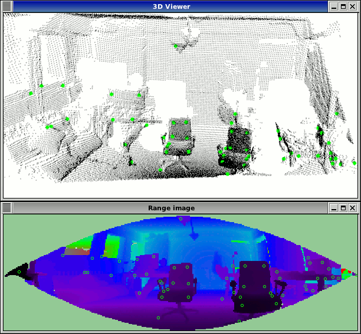
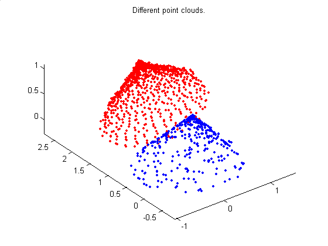
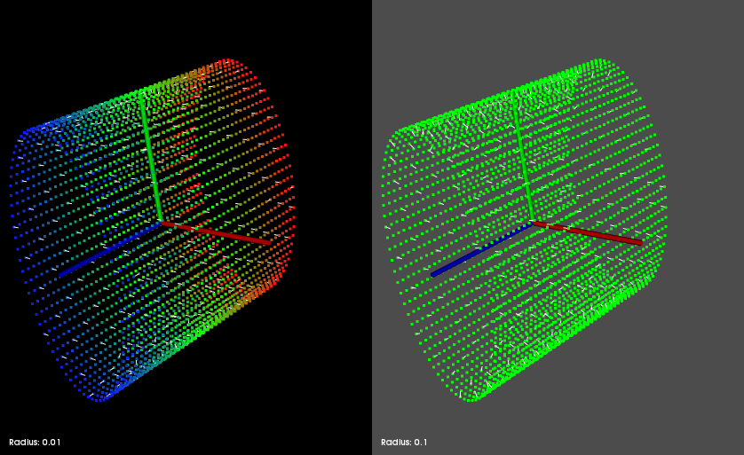

The following links describe a set of basic PCL tutorials. Please note that their source codes may already be provided as part of the PCL regular releases, so check there before you start copy & pasting the code. The list of tutorials below is automatically generated from reST files located in our SVN repository.
Note
Before you start reading, please make sure that you go through the higher-level overview documentation at http://www.pointclouds.org/documentation/, under Getting Started. Thank you.
As always, we would be happy to hear your comments and receive your contributions on any tutorial.
Table of contents
Basic Usage
Getting Started / Basic Structures
Title: Getting Started / Basic Structures
Author: Radu B. Rusu
Compatibility: > PCL 1.0
Presents the basic data structures in PCL and discusses their usage with a simple code example.
Title: Using PCL in your own project
Author: Nizar Sallem
Compatibility: > PCL 1.0
In this tutorial, we will learn how to link your own project to PCL using cmake.
Customizing the PCL build process
Title: Explaining PCL’s cmake options
Author: Nizar Sallem
Compatibility: > PCL 1.0
In this tutorial, we will explain the basic PCL cmake options, and ways to tweak them to fit your project.
Building PCL’s dependencies from source on Windows
Title: Compiling PCL’s dependencies from source on Windows
Authors: Alessio Placitelli and Mourad Boufarguine
Compatibility: > PCL 1.0
In this tutorial, we will explain how to compile PCL’s 3rd party dependencies from source on Microsoft Windows.
Compiling PCL from source on Windows
Title: Compiling PCL on Windows
Author: Mourad Boufarguine
Compatibility: > PCL 1.0
In this tutorial, we will explain how to compile PCL on Microsoft Windows.
Compiling PCL and its dependencies from MacPorts and source on Mac OS X
Title: Compiling PCL and its dependencies from MacPorts and source on Mac OS X
Author: Justin Rosen
Compatibility: > PCL 1.0
This tutorial explains how to build the Point Cloud Library from MacPorts and source on Mac OS X platforms.
Installing on Mac OS X using Homebrew
Title: Installing on Mac OS X using Homebrew
Author: Geoffrey Biggs
Compatibility: > PCL 1.2
This tutorial explains how to install the Point Cloud Library on Mac OS X using Homebrew. Both direct installation and compiling PCL from source are explained.
Advanced Usage
Adding your own custom PointT type
Title: Adding your own custom PointT point type
Author: Radu B. Rusu
Compatibility: > PCL 0.9, < PCL 2.0
This document explains what templated point types are in PCL, why do they exist, and how to create and use your own PointT point type.
Title: Writing a new PCL class
Author: Radu B. Rusu, Luca Penasa
Compatibility: > PCL 0.9, < PCL 2.0
This short guide is to serve as both a HowTo and a FAQ for writing new PCL classes, either from scratch, or by adapting old code.
Features
Title: How 3D features work
Author: Radu B. Rusu
Compatibility: > PCL 1.0
This document presents a basic introduction to the 3D feature estimation methodologies in PCL.
Estimating Surface Normals in a PointCloud
Title: Estimating Surface Normals in a PointCloud
Author: Radu B. Rusu
Compatibility: > PCL 1.0
This tutorial discusses the theoretical and implementation details of the surface normal estimation module in PCL.
Normal Estimation Using Integral Images
Title: Normal Estimation Using Integral Images
Author: Stefan Holzer
Compatibility: > PCL 1.0
In this tutorial we will learn how to compute normals for an organized point cloud using integral images.
Point Feature Histograms (PFH) descriptors
Title: Point Feature Histograms (PFH) descriptors
Author: Radu B. Rusu
Compatibility: > PCL 1.0
This tutorial introduces a family of 3D feature descriptors called PFH (Point Feature Histograms) and discusses their implementation details from PCL’s perspective.
Fast Point Feature Histograms (PFH) descriptors
Title: Fast Point Feature Histograms (FPFH) descriptors
Author: Radu B. Rusu
Compatibility: > PCL 1.3
This tutorial introduces the FPFH (Fast Point Feature Histograms) 3D descriptor and discusses their implementation details from PCL’s perspective.
Estimating VFH signatures for a set of points
Title: Estimating VFH signatures for a set of points
Author: Radu B. Rusu
Compatibility: > PCL 0.8
This document describes the Viewpoint Feature Histogram (VFH) descriptor, a novel representation for point clusters for the problem of Cluster (e.g., Object) Recognition and 6DOF Pose Estimation.
How to extract NARF Features from a range image

Title: How to extract NARF features from a range image
Author: Bastian Steder
Compatibility: > 1.3
In this tutorial, we will learn how to extract NARF features from a range image.
Benchmarking Feature Descriptor Algorithms
Title: How to benchmark feature descriptor algorithms
Author: Pararth Shah
Compatibility: > PCL 1.0
In this tutorial, we will go over how to use the FeatureEvaluationFramework class to benchmark various feature descriptor algorithms.
Filtering
Filtering a PointCloud using a PassThrough filter
Title: Filtering a PointCloud using a PassThrough filter
Author: Radu B. Rusu
Compatibility: > PCL 1.0
In this tutorial, we will learn how to remove points whose values fall inside/outside a user given interval along a specified dimension.
Downsampling a PointCloud using a VoxelGrid filter
Title: Downsampling a PointCloud using a VoxelGrid filter
Author: Radu B. Rusu
Compatibility: > PCL 1.0
In this tutorial, we will learn how to downsample (i.e., reduce the number of points) a Point Cloud.
Removing outliers using a StatisticalOutlierRemoval filter
Title: Removing sparse outliers using StatisticalOutlierRemoval
Author: Radu B. Rusu
Compatibility: > PCL 1.0
In this tutorial, we will learn how to remove sparse outliers from noisy data, using StatisticalRemoval.
Projecting points using a parametric model
Title: Projecting points using a parametric model
Author: Radu B. Rusu
Compatibility: > PCL 1.0
In this tutorial, we will learn how to project points to a parametric model (i.e., plane).
Extracting indices from a PointCloud
Title: Extracting indices from a PointCloud
Author: Radu B. Rusu
Compatibility: > PCL 1.0
In this tutorial, we will learn how to extract a set of indices given by a segmentation algorithm.
Removing outliers using a Conditional or RadiusOutlier removal
Title: Removing outliers using a Conditional or RadiusOutlier removal
Author: Gabe O’Leary
Compatibility: > PCL 1.0
In this tutorial, we will learn how to remove outliers from noisy data, using ConditionalRemoval, RadiusOutlierRemoval.

I/O
The PCD (Point Cloud Data) file format
Title: The PCD (Point Cloud Data) file format
Author: Radu B. Rusu
Compatibility: > PCL 0.9
This document describes the PCD file format, and the way it is used inside PCL.
Reading Point Cloud data from PCD files
Title: Reading Point Cloud data from PCD files
Author: Radu B. Rusu
Compatibility: > PCL 1.0
In this tutorial, we will learn how to read a Point Cloud from a PCD file.
Writing Point Cloud data to PCD files
Title: Writing Point Cloud data to PCD files
Author: Radu B. Rusu
Compatibility: > PCL 1.0
In this tutorial, we will learn how to write a Point Cloud to a PCD file.
Concatenate the points of two Point Clouds
Title: Concatenate the fields or points of two Point Clouds
Author: Gabe O’Leary / Radu B. Rusu
Compatibility: > PCL 1.0
In this tutorial, we will learn how to concatenate both the fields and the point data of two Point Clouds. When concatenating fields, one PointClouds contains only XYZ data, and the other contains Surface Normal information.
The OpenNI Grabber Framework in PCL
Title: Grabbing Point Clouds from an OpenNI camera
Author: Nico Blodow
Compatibility: > PCL 1.0
In this tutorial, we will learn how to acquire point cloud data from an OpenNI camera.
Keypoints
How to extract NARF keypoint from a range image
Title: How to extract NARF keypoints from a range image
Author: Bastian Steder
Compatibility: > 1.3
In this tutorial, we will learn how to extract NARF keypoints from a range image.
KdTree
Title: KdTree Search
Author: Gabe O’Leary
Compatibility: > PCL 1.0
In this tutorial, we will learn how to search using the nearest neighbor method for k-d trees

Octree
Title: Point cloud compression
Author: Julius Kammerl
Compatibility: > PCL 1.0
In this tutorial, we will learn how to compress a single point cloud and streams of point clouds.
Spatial Partitioning and Search Operations with Octrees
Title: Octrees for spatial partitioning and neighbor search
Author: Julius Kammerl
Compatibility: > PCL 1.0
In this tutorial, we will learn how to use octrees for spatial partitioning and nearest neighbor search.
Spatial change detection on unorganized point cloud data
Title: Spatial change detection on unorganized point cloud data
Author: Julius Kammerl
Compatibility: > PCL 1.0
In this tutorial, we will learn how to use octrees for detecting spatial changes within point clouds.

Range Images
How to create a range image from a point cloud
Title: Creating Range Images from Point Clouds
Author: Bastian Steder
Compatibility: > PCL 1.0
This tutorial demonstrates how to create a range image from a point cloud and a given sensor position.
How to extract borders from range images
Title: Extracting borders from Range Images
Author: Bastian Steder
Compatibility: > PCL 1.3
This tutorial demonstrates how to extract borders (traversals from foreground to background) from a range image.


Registration
Title: The PCL Registration API
Author: Dirk Holz, Radu B. Rusu, Jochen Sprickerhof
Compatibility: > PCL 1.5
In this document, we describe the point cloud registration API and its modules: the estimation and rejection of point correspondences, and the estimation of rigid transformations.
How to use iterative closest point

Title: How to use iterative closest point algorithm
Author: Gabe O’Leary
Compatibility: > PCL 1.0
This tutorial gives an example of how to use the iterative closest point algorithm to see if one PointCloud is just a rigid transformation of another PointCloud.
Sample Consensus
How to use Random Sample Consensus model
Title: How to use Random Sample Consensus model
Author: Gabe O’Leary
Compatibility: > PCL 1.0
In this tutorial we learn how to use a RandomSampleConsensus with a plane model to obtain the cloud fitting to this model.

Segmentation
Title: Plane model segmentation
Author: Radu B. Rusu
Compatibility: > PCL 1.3
In this tutorial, we will learn how to segment arbitrary plane models from a given point cloud dataset.
Title: Cylinder model segmentation
Author: Radu B. Rusu
Compatibility: > PCL 1.3
In this tutorial, we will learn how to segment arbitrary cylindrical models from a given point cloud dataset.
Title: Euclidean Cluster Extraction
Author: Serkan Tuerker
Compatibility: > PCL 1.3
In this tutorial we will learn how to extract Euclidean clusters with the pcl::EuclideanClusterExtraction class.

Surface
Smoothing and normal estimation based on polynomial reconstruction
Title: Smoothing and normal estimation based on polynomial reconstruction
Author: Zoltan-Csaba Marton
Compatibility: > PCL 1.3
In this tutorial, we will learn how to construct and run a Moving Least Squares (MLS) algorithm to obtain smoothed XYZ coordinates and normals.
Construct a concave or convex hull polygon for a plane model
Title: Construct a concave or convex hull polygon for a plane model
Author: Gabe O’Leary, Radu B. Rusu
Compatibility: > PCL 1.0
In this tutorial we will learn how to calculate a simple 2D concave or convex hull polygon for a set of points supported by a plane.
Fast triangulation of unordered point clouds
Title: Fast triangulation of unordered point clouds
Author: Zoltan-Csaba Marton
Compatibility: > PCL 1.0
In this tutorial we will learn how to run a greedy triangulation algorithm on a PointCloud with normals to obtain a triangle mesh based on projections of the local neighborhood.
Visualization
Title: Visualizing Point Clouds
Author: Ethan Rublee
Compatibility: > PCL 1.0
This tutorial demonstrates how to use the pcl visualization tools.
How to visualize a range image
Title: Visualizing Range Images
Author: Bastian Steder
Compatibility: > PCL 1.3
This tutorial demonstrates how to use the pcl visualization tools for range images.

Title: PCLVisualizer
Author: Geoffrey Biggs
Compatibility: > PCL 1.3
This tutorial demonstrates how to use the PCLVisualizer class for powerful visualisation of point clouds and related data.
Applications
Aligning object templates to a point cloud
Title: Aligning object templates to a point cloud
Author: Michael Dixon
Compatibility: > PCL 1.3
This tutorial gives an example of how some of the tools covered in the previous tutorials can be combined to solve a higher level problem — aligning a previously captured model of an object to some newly captured data.
Cluster Recognition and 6DOF Pose Estimation using VFH descriptors
Title: Cluster Recognition and 6DOF Pose Estimation using VFH descriptors
Author: Radu B. Rusu
Compatibility: > PCL 0.8
In this tutorial we show how the Viewpoint Feature Histogram (VFH) descriptor can be used to recognize similar clusters in terms of their geometry.